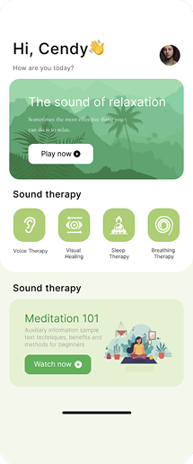
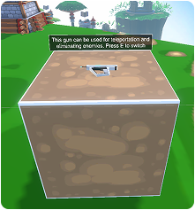
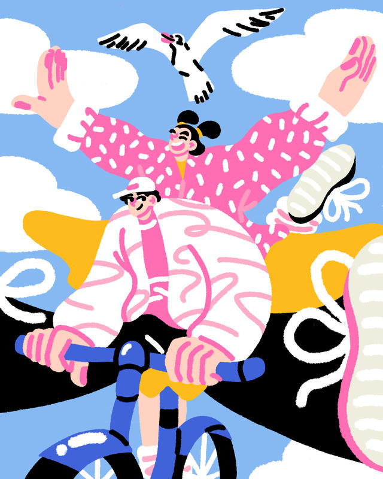
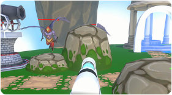
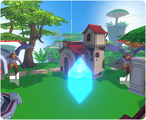

Sector Analysis

Why this industry
Three reasons:
1.Impact at scale. Interaction design shapes daily
behaviours across commerce, healthcare,
education and public services. Small interface
decisions compound into measurable
outcomes.
2.Problemsolver × systemsbuilder fit. The work
rewards clear thinking, structured iteration
and componentised delivery—exactly the habit
3.China’s multiplatform landscape. Designing
consistently across app/web/miniprogram/HMI
offers rich problems where research evidence and
designsystem thinking matter.
My connection with this industry
Three points:
1.Clear purpose. I believe great technology should feel simple. Seeing many products confuse
users pushed me toward
interaction design—building a clearer, more human bridge between people and
technology.
2.Good fit with my strengths. I think in systems and have strong empathy. In an
emotional-experience project, I rebuilt
the information structure and helped users complete key tasks 30% faster. I work from
concept to prototype, use Figma
well, and iterate with data and testing.
3.Growing with the field. Interaction design is expanding from screens to voice, AR/VR and
service systems. The
interdisciplinary, fast-evolving nature fits my curiosity and keeps me motivated to learn
and collaborate.
Industry Insights
Employment models & personal fit
My understanding of UX/interaction design careers has been shaped by industry research and discussions with professionals. According to The Futureplex (2024), the next five years will see increasing demand for in-house designers who can collaborate deeply with product and engineering teams, while agencies will remain hubs for fast-paced creativity. This directly supports my decision to pursue in-house roles at this stage.
Comparing the three career models
Agency
Industry insights suggest agencies offer broad exposure and rapid iteration skills but often involve high pressure and fragmented projects (UX Collective, 2023). This confirms my own experience: agency-style work helps me grow quickly, but not sustainably at this stage.
In-house
Reports indicate that in-house UX roles enable designers to: Work with long-term user dataBuild consistent design systemsFocus on measurable impact (ArtVersion, 2024) This matches my strengths in systematic thinking and long-term execution.
Interviewee : In-house UX Designer at a major internet company (Beijing/Shenzhen)
Interviewee Background:
7 years of experience in interaction design, having worked at Alibaba and ByteDance, responsible for multi-platform
products (App/Web/Mini Programs).
“Today's interaction designers are no longer just interface drawers. Companies need people who can comprehensively
consider business goals, user research, and technical constraints. You need to be able to explain clearly: Why is it
designed this way? What results will it bring? This is more important than being able to make prototypes.”
“If you take the in-house route, you must understand data. A designer who can't tell a story with data won't last in
today's teams.”
Freelance
The Futureplex (2024) suggests that freelance UX roles will grow, but require strong personal branding, business operations, and network building. This aligns with my long-term plan but not my short-term capability.
Interviewee: Freelancer / Independent Designer (Hong Kong)
Respondent background:
A freelance UX/UI designer with 5 years of experience, having long been involved in SaaS projects in the health and
education sectors.
"Freelancing is not freedom; it's doing all the tasks yourself. You are simultaneously working as a PM, BD
representative, Designer, Finance officer, and Researcher."
"The advantage of being a freelancer is that you can choose your own field of work. For example, I only do healthcare
and education. This way, it's easier for me to be recognized in the market."
"If you aspire to become a hybrid designer in the future, you must have an anchor domain - such as healing, travel, or
learning."
- 
- 
- 
- 
- 
Career Goals (SMART)
Master's degree → Internship experience → User experience/user interface position within China. Complete a Master's degree in Interaction/ Creative Technology to deepen research/testing and dynamic design; utilize this course to obtain internship opportunities and complete case studies in the field of interaction industry design. After graduation, the goal is to obtain an internal user experience/user interface position in China and continue to develop mixed advantages. My career plan follows a three-stage path: short-term, mid-term and long-term goals. Each stage builds on the previous one and supports my transition from a student into a professional interaction designer.
Mid-term Goal (1–3 years): Become a Junior Interaction Designer in China After graduating, my goal is to obtain a junior UX/UI or interaction designer position in China, ideally in Beijing, Shanghai, Shenzhen, Hangzhou or Guangzhou.
During this period, I plan to:
-
participate in real product cycles
-
learn how to use data dashboards to support design decisions
-
independently design at least one full feature or module
-
develop strong collaboration skills with product managers, engineers and researchers
The aim of this stage is to grow from a learner into a competent, reliable professional who can deliver meaningful design outcomes.
ong-term Goal (3–5 years and beyond): Become a Senior Designer / Experience Architect My long-term goal is to advance into a senior interaction designer or experience architect role.
In this stage, I hope to:
-
lead the experience design of an innovative project
-
mentor junior designers and contribute to team growth
-
incorporate inclusive-design research into team workflows
-
create design work that brings educational, social or emotional value
This aligns with industry trends in which interaction designers become strategic partners who shape user experience at a system level.